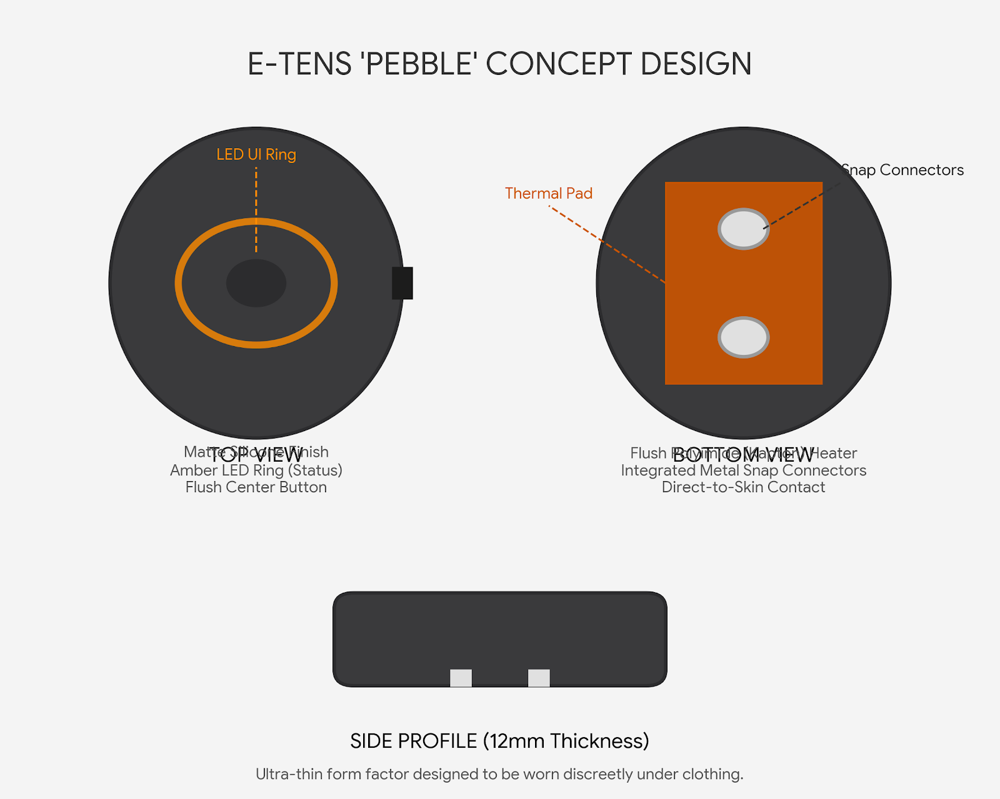

PROJECT OVERVIEW
An award-winning HealthTech innovation providing intelligent, non-invasive and drug-free relief from menstrual pain through advanced TENS technology.
Women's Health
Designed to provide intelligent, drug-free relief from menstrual pain and improve everyday comfort.
Intelligent TENS
Controlled electrical stimulation helps reduce menstrual pain safely without relying on medication.
Drug-Free Relief
A safe, non-invasive alternative to frequent pain medication for menstrual discomfort.
Portable Design
Lightweight, compact and designed for convenient everyday use at home, work or while travelling.
Smart Electronics
Precision-designed electronic circuitry delivers stable, reliable and controlled TENS stimulation.
National Champion
Winner of the National Ideathon Championship held in Jharkhand for innovative healthcare technology and social impact.
Why Menstrual Pain Needs Better Solutions
Millions of women experience painful menstrual cramps that affect their education, work, daily activities and overall quality of life. While pain medication is commonly used, it may not always provide sufficient relief or be suitable for everyone. There is a growing need for a safe, portable and drug-free alternative that can provide effective pain management whenever required.
Intelligent Drug-Free Pain Management
Team Eco Vision developed GO FREE ETENS as an intelligent wearable Transcutaneous Electrical Nerve Stimulation (TENS) device to provide safe, non-invasive and drug-free relief from menstrual pain. Designed for portability, comfort and ease of use, the device delivers controlled electrical stimulation to help reduce discomfort, including pain commonly associated with PCOS and PCOD, while minimizing dependence on pain medication.
DEVICE SPECIFICATIONS
An intelligent wearable medical device integrating biomedical electronics, controlled TENS stimulation and user-centric design for safe, drug-free menstrual pain relief.
Control System
Custom TENS Control Circuit
Pulse Generation Module
Power System
Rechargeable Battery
Portable Low-Power Operation
Stimulation System
Adjustable TENS Pulse Output
Medical Electrode Pads
Operating Modes
Standby Mode
Therapy Mode
Adjustable Intensity
Application
Menstrual Pain Relief
Support for Pain Associated with PCOS & PCOD
Recognition
National Ideathon Champion
Jharkhand
HealthTech Innovation
SYSTEM STATUS
Current capabilities of the Solar Powered Precision Agriculture Rover prototype.
HOW GO FREE E-TENS WORKS
The complete operating principle of GO FREE ETENS, illustrating how controlled electrical stimulation is generated and safely delivered to provide drug-free menstrual pain relief.

GO FREE ETENS operates by generating controlled electrical pulses through a dedicated TENS control circuit. These pulses are delivered via medical electrode pads placed on the lower abdomen, helping to reduce menstrual pain by stimulating peripheral nerves. The device is designed to provide safe, non-invasive and drug-free pain relief through adjustable stimulation intensity and user-friendly operation.
DEVICE COMPONENTS
Carefully engineered electronic and biomedical components working together to deliver safe, controlled and effective TENS therapy.
TENS Control Circuit
Pulse Generation UnitGenerates controlled electrical pulses for safe and effective Transcutaneous Electrical Nerve Stimulation therapy.
Intensity Controller
User Control ModuleAllows users to adjust the stimulation intensity to a comfortable level for personalized therapy.
Medical Electrodes
Therapy InterfaceSoft medical-grade electrode pads safely deliver electrical stimulation to the targeted area for effective pain relief.
Rechargeable Battery
Portable Power SourceSupplies stable power to the TENS control circuit, ensuring reliable and portable operation throughout therapy sessions.
TREATMENT WORKFLOW
Step-by-step workflow illustrating the safe and effective use of GO FREE ETENS for drug-free menstrual pain relief.
System Initialization
Power is distributed to the Raspberry Pi, ESP32 and onboard sensors.
Connect Electrode Pads
Attach the medical electrode pads securely to the device.
Position the Electrodes
Place the electrode pads on the lower abdomen according to the recommended placement guide.
Adjust Intensity
Select a comfortable stimulation level using the control buttons.
Begin Therapy
The device delivers controlled TENS pulses to help reduce menstrual discomfort.
End Session
Turn off the device after therapy and safely remove the electrode pads.
DEVELOPMENT JOURNEY
The journey of GO FREE ETENS from identifying a real healthcare challenge to becoming a National Championship-winning HealthTech innovation.
Problem Identification
Identified the need for a safe, non-invasive and drug-free solution to help individuals experiencing severe menstrual pain and improve their quality of life.
Medical Research
Studied the principles of Transcutaneous Electrical Nerve Stimulation (TENS) and reviewed its application in pain management to develop an effective therapy solution.
Circuit Design
Designed and developed the electronic circuitry responsible for generating safe and controlled TENS stimulation suitable for portable use.
Prototype Development
Integrated the electronic components into a compact wearable prototype and evaluated its functionality, usability and overall design.
National Championship
GO FREE ETENS won the National Ideathon Championship held in Jharkhand, receiving recognition for its innovation, social impact and contribution to women's healthcare.
Future Vision
Future development includes enhanced wearable design, additional therapy modes, clinical validation and wider accessibility for women's healthcare.
AWARDS & RECOGNITION
GO FREE ETENS has been recognised at the national level for its innovation in women's healthcare, biomedical engineering and social impact.
🏆 National Ideathon Champion
GO FREE ETENS secured the National Championship at the National Ideathon held in Jharkhand for its innovative healthcare solution providing drug-free menstrual pain relief through intelligent TENS technology.


BUILD THE FUTURE WITH US
Team Eco Vision welcomes collaboration with industries, research institutions, government organizations, startups and innovation partners working towards sustainable agriculture and intelligent robotics.
Research
Joint research projects, publications and technology development.
Industry
Prototype development, industrial automation and pilot deployments.
Government
Smart healthcare initiatives, innovation programs and public sector partnerships.
Partnerships
Open to collaboration with startups, incubators and technology organizations.
TEAM ECO VISION
Engineering Intelligent Robotics for Agriculture, Healthcare, Defence and Smart Infrastructure.
Explore More Innovations